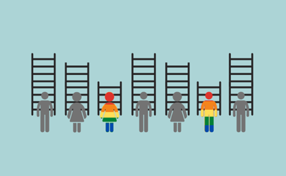

Institucional o social, dos formas de discriminar
La discriminación que enfrenta la población LGBTIQ+ se puede agrupar en dos tipos Institucional, que es aquella producida por normas legales o la falta de garantías y reconocimiento de derechos; y Social, correspondiente a la generada por normas o conductas de la sociedad en general.
Institucional
La discriminación institucional más evidente es la penalización de la homosexualidad. A pesar de que muchos países en el mundo, sobre todo los desarrollados, han dejado de prohibir legalmente la homosexualidad, aún quedan países en que las relaciones sexuales entre adultos del mismo sexo son penalizadas, incluso con la pena de muerte. La organización Free & Equal de la ONU, grafica la despenalización de la homosexualidad en el tiempo. Te invitamos a revisarlo aquí
Por otro lado, en diversos países no existe un reconocimiento irrestricto de derechos a la población LGBTIQ+, entre ellos, los más discutidos son el derecho al matrimonio y a la adopción de hijos. Business Insider, a partir del informe “State-Sponsored Homophobia” de la International Lesbian, Gay, Bisexual, Trans and Intersex Association (ILGA), ha hecho un estudio sobre el tema dando a conocer qué países reconocen el matrimonio igualitario y la adopción de hijos. Para más información, puedes revisar aquí
Social
Junto con las normas legales que existen en un país (o la inexistencia de ellas), las “normas sociales” que predominan en una comunidad pueden propiciar o respaldar conductas discriminatorias, lo que ocurriría justamente con la población LGBTIQ+, pues un prejuicio generalizado en la sociedad resulta en discriminación y exclusión en distintos ámbitos, los que van desde los social hasta lo económico; afectando a la persona discriminada en su desarrollo personal, familiar, profesional, entre otros.
Marie-Anne
Valfor, en un estudio de la Organización para la Cooperación y el Desarrollo Económico
(OCDE), analiza este fenómeno y lo denomina “LGBTI penalty”, es decir, cómo afecta a un
individuo ser parte de la comunidad LGBTIQ+ en distintos aspectos de su bienestar.
Entre los hallazgos encontrados, destacan los siguientes:
- La homofobia sigue estando presente en la mayoría de los países de la OCDE y la actitud hacia personas transgénero sigue siendo negativa.
- La falta de reconocimiento de parejas del mismo sexo afecta la estabilidad de las parejas y el bienestar de sus hijes.
- La estigmatización de minorías sexuales y de género en escuelas constituye una barrera importante para el desarrollo educacional.
- Hombres gay tienen menos probabilidades para ser contratados, trabajan menos horas y ganan menos que un hombre heterosexual. Mientras que en el caso de mujeres lesbianas pasa lo contrario en comparación a mujeres heterosexuales. Estos resultados reflejan la prevalencia de el “sesgo de especialización en el hogar” en parejas heterosexuales, lo que no se da en hogares con parejas del mismo sexo.
- Se encuentran mayores tasas de problemas físicos y de salud mental en las minorías sexuales y de género, y las personas bisexuales, transgénero e intersexuales muestran una brecha aún mayor.
- Personas de la población LGBTIQ+ tienen una mayor probabilidad de considerar/intentar suicidarse. En Estados Unidos, esta brecha ha disminuido más rápido en los estados que se ha permitido la adopción en parejas del mismo sexo.
Para mayor información sobre el estudio, puedes revisar aquí [disponible en inglés].